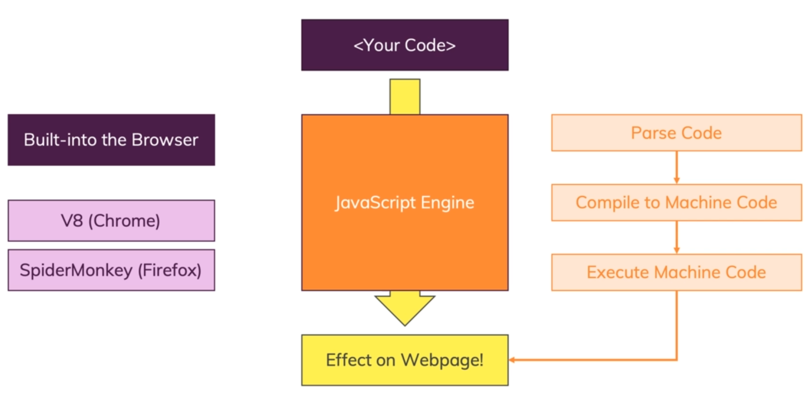
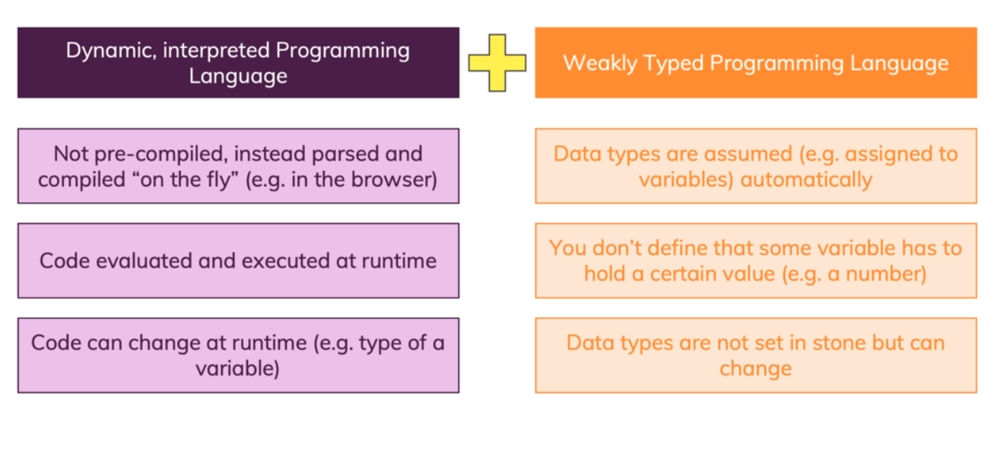
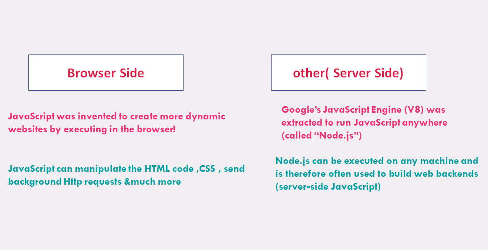

JavaScript was created to make webpages more dynamic (e.g. change content on a page directly from inside the browser)
JavaScript is a dynamic, weakly typed programming language which is interpreted at runtime, It can be executed as part of a webpage in a browser or directly on any machine (“host environment”).
JavaScript is a dynamic, interpreted and weakly typed programming language
JavaScript is a dynamic, interpreted and weakly typed programming language
How is JavaScript Executed
Dynamic, Weakly typed
Hosted language (Runs in different environments)
one more thing...
JavaScript is not Java*
programs in this language are called scripts